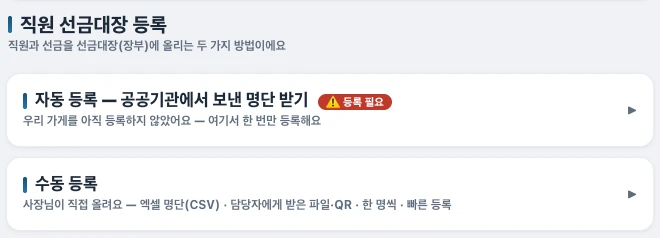

음식점 사장님 안내
가게 장부 쓰기
손님이 금액과 서명을 입력하면,
사장님이 확인하고 저장해요.
매일은 이 순서로 쓰세요
손님 화면으로 바꿔요
사장님 홈에서 [손님 셀프 조회]를 눌러 태블릿을 건네주세요.
손님이 입력해요
이름·소속 확인 → 금액 입력 → 서명 → [사장님 확인 받기].
비밀번호를 넣고 저장해요
사장님이 앱 비밀번호를 입력해요. 이름·금액·서명이 맞으면 [저장]을 눌러요.
손님 화면으로 돌려놔요
저장 결과와 잔액을 확인해 주세요. 다음 손님에게는 사장님 화면을 보여주지 않아요.

위의 잔액과 입력한 식사 금액은 달라요.화면 크게 보기 ↗
처음 준비하고, 명단을 받아요
한 가게에서 태블릿 또는 스마트폰 한 대를 정해 사용하세요. 앱을 열고 안내에 따라 가게 정보와 비밀번호를 설정해요.
설정 여는 법: 첫 손님 화면 아래 [사장님용 잠금 해제] → 비밀번호 → [설정].
기관에서 명단을 보내주면
우리 가게를 등록해요
설정 → 자동 등록에서 등록 여부를 확인해요. 미등록이면 [우리 가게 등록]을 진행해요.
받은 명단을 열어요
홈의 [새 명단 신청] 알림을 눌러요. 받을 때는 인터넷 연결이 필요해요.
실제 결제와 맞춰 보고 승인해요
명단의 이름·금액을 확인하고, 통장 입금이나 카드 전표와 대조한 뒤 [결제 확인 후 승인]을 눌러요.

수동 등록은 ‘직접 올리기’예요.화면 크게 보기 ↗
직접 등록하려면 설정 → [수동 등록] → [한 명씩 등록]을 사용하세요. 이미 등록한 직원의 추가 선금은 [직원 목록 관리] → [충전]에서 기록해요.
장부는 따로 보관해 주세요
설정을 열어요
첫 손님 화면 아래 [사장님용 잠금 해제] → 앱 비밀번호 → [설정]으로 들어가요. 전체 거래는 [이력]에서 봐요.
영업이 끝나면 장부를 저장해요
[장부 안전 저장·복원·검사] → [장부 안전 저장]을 눌러요. 내려받은 파일은 태블릿 밖의 안전한 곳에도 보관해요.
가게 열쇠도 따로 보관해요
가게를 등록했다면 [자동 등록] → [내 열쇠 백업(중요)]도 해 두세요. 장부 파일에는 가게 열쇠가 들어 있지 않아요.
막히면 이렇게 하세요
이름이 없거나 잔액이 달라요
소속과 등록 명단, [이력]의 충전·사용 기록부터 확인해요. 금액을 임의로 맞추기보다 담당자와 내역을 대조하세요.
비밀번호가 기억나지 않아요
바로 초기화하지 마세요. 비밀번호 복구 안내에서 백업 유무부터 확인해요.
손님에게 어디까지 보여주나요?
이름 확인 뒤에는 잔액을 볼 수 있어요. [네, 맞아요]는 비밀번호 인증이 아니에요. 다른 사람의 내역을 열지 않도록 안내하고, 기기 자체 화면 잠금도 설정해요.